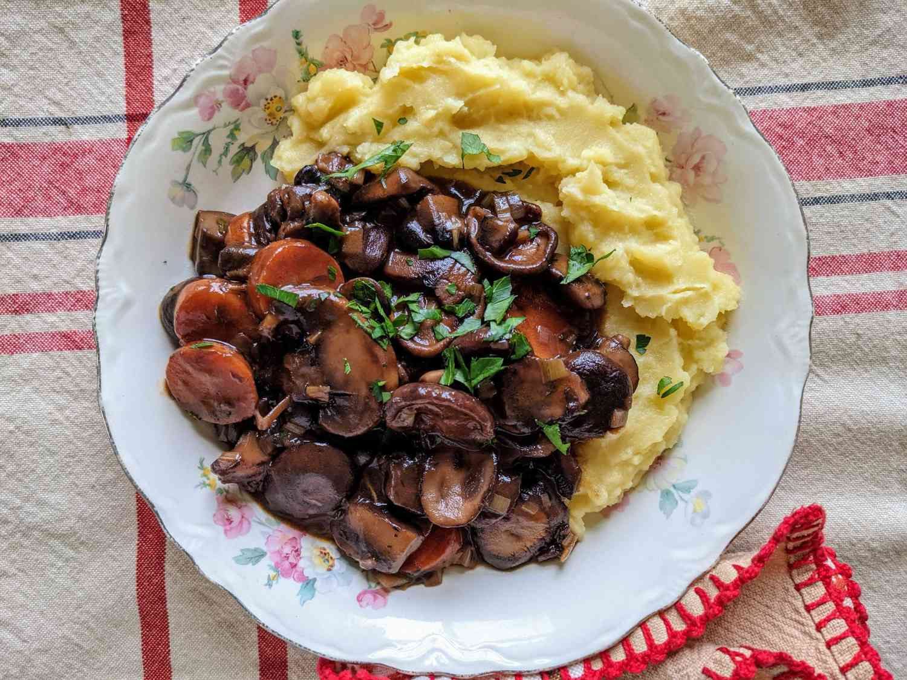

French-Style Mushroom Stew

Description
Mushrooms simmered with onions, wine, and carrots make for a rich, French-style stew.
Serve with egg noodles, polenta, or mashed potatoes.
Ingredients
- 16 ounces button mushrooms, chopped
- 8 ounces cremini mushrooms, chopped
- 8 ounces shiitake mushrooms, chopped
Steps
- Combine all four mushroom types in a large bowl with onions; toss gently to mix.
- Season mushroom-onion mixture with salt and pepper.
- Reduce heat to low and simmer, partly covered, until carrots and onions are tender and sauce has thickened, 30 to 40 minutes.